Research Hub/The season on YouTube so far: 106 days/Bundesliga
YouTube Football Tracker · Bundesliga 2026/27
How the 18 clubs and the league channel publish, who gets watched and who goes quiet, then the season's biggest videos and what they have in common, read chart by chart.
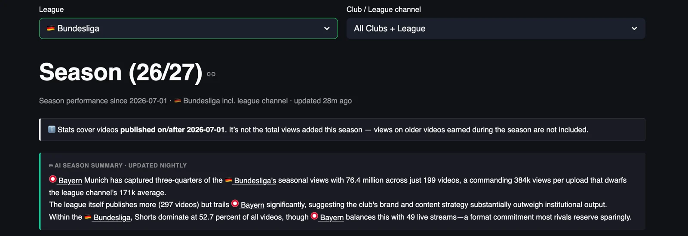
Bayern Munich has taken almost half of all Bundesliga views on YouTube this season, 147.7 million from 278 videos, which is 45% of the 329.7 million the 19 channels have collected since July and a 71% lead over the official league channel at 86.2 million. The club got there with Shorts, 100.6 million views from 162 of them, and with a volume of live streams, 55 in three and a half months, that no other club comes close to.
The league channel publishes more than anybody, 401 videos, and earns 214.9 thousand views per upload against 531.2 thousand for Bayern, so the institution is outpublished on return by a single club by a factor of two and a half. Borussia Dortmund is third at 32.7 million, and below that the Bundesliga is a long list of channels under 10 million, Schalke, Leverkusen, Frankfurt, HSV and Mainz among them, sharing what Bayern and the league leave behind.
This is the summary the tracker writes for itself every night, with the numbers corrected against the table, and part one of this piece takes the dashboard apart one chart at a time, to show what sits under those sentences, and part two looks at the biggest individual videos of the season.
Scope: videos published on or after 1 July 2026 on the 18 Bundesliga club channels plus the official league channel, 3,140 videos over 106 days, snapshot of 15 October 2026. Views on older videos earned during the season are not counted.
YouTube Football Tracker
The YouTube Football Tracker follows more than 100 club and league channels across the top five European leagues, plus the road to the World Cup 2026, with daily recaps, season trends and all-time leaderboards, updated every night. If you run YouTube for a club or a league, it is the quickest way to see what your rivals publish, when and in which format, and which of their videos actually travel, so you can learn from them before you plan your own. If you are a sports journalist, it shows you which stories, clubs and formats work on YouTube this week, with the numbers to back the piece. Open the tracker and start with your own league, and if you want a deeper read for your club or your newsroom, message me on LinkedIn.
Explore the YouTube Football TrackerYou can find me on LinkedIn, read my LinkedIn newsletter or find me on Substack.
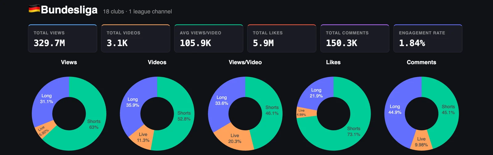
Since 1 July the 19 channels have published about 3,100 videos and collected 329.7 million views, 5.9 million likes and 150.3 thousand comments, which works out at 105.9 thousand views per video and an engagement rate of 1.84%. That is more views than Serie A from a thousand fewer videos, with a lower engagement rate, and the Bayern audience sits under both of those numbers.
Shorts are 52.8% of what Bundesliga channels publish and they bring in 63% of the views and 73.1% of the likes, so the vertical feed does the heavy lifting on reach and on reactions, and long-form, at 35.9% of output, takes 31.1% of the views and 44.9% of the comments, almost level with Shorts on conversation. Live is the Bundesliga's distinctive number, 11.3% of all uploads, close to double the share in Serie A, and it earns 5.92% of the views, so clubs here stream a lot and get a small audience for it. In the views-per-video donut live still takes 20.3%, because the handful of streams that work, mostly Bayern and Dortmund, pull big numbers and lift the average for everyone.
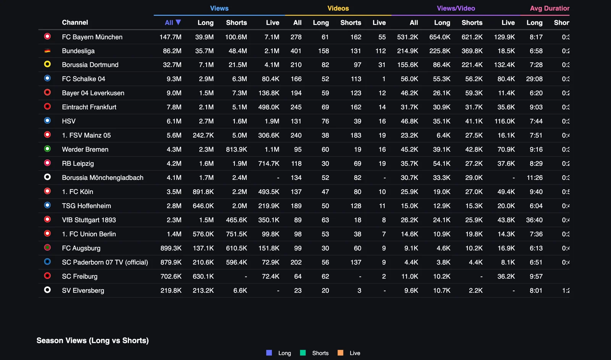
Bayern sits on top with 147.7 million views from 278 videos, and 100.6 million of those views come from 162 Shorts, with another 39.9 million from only 61 long-form videos that average 654 thousand views each, the best long-form average in the Bundesliga by a distance and second only to Manchester City across the five leagues. The official Bundesliga channel is second with 86.2 million from 401 videos, and Bayern beats it in every format, 654 thousand to 225.8 thousand on long-form, 621.2 thousand to 369.8 thousand on Shorts and 129.9 thousand to 18.5 thousand on live. Dortmund is third with 32.7 million, with 21.5 million from Shorts and 4.1 million from 31 live streams.
After Dortmund the table drops to Schalke in fourth with 9.3 million, less than a third of Dortmund, and then Leverkusen at 9.0 million, Frankfurt at 7.8 million and HSV at 6.1 million. The lines I would look at twice are Schalke, which has a 29:08 average long-form duration and 113 Shorts that earn 56.2 thousand each, and HSV, whose 16 live streams average 116 thousand views, three times its long-form. At the bottom Elversberg has 219.8 thousand views from 23 videos, Freiburg has not published a single Short in this window, and Paderborn has put out 202 videos for 879.9 thousand views, 4.4 thousand per upload.
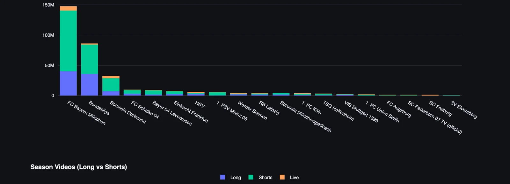
Three channels are above 30 million and everybody else is below 10 million. Bayern, the league channel and Dortmund add up to 266.6 million views, 81% of the 329.7 million total, and the remaining 16 clubs share 63 million between them, which is less than Bayern earns from Shorts alone.
Bayern takes 100.6 million of its 147.7 million views from Shorts, 68% of the total, and its two main formats earn almost the same per video, 654 thousand for long-form and 621.2 thousand for Shorts, and its weakest format is live, where 55 streams average 129.9 thousand, which is still more than most clubs get from anything. If you work for a club channel in Germany, the Bayern line is the one you cannot copy, because the audience that produces 600 thousand views for a seventeen-second clip is a global one.
The league channel gets 56% of its views from Shorts, 48.4 million from 131 videos, and 41% from long-form, 35.7 million from 158 videos, and its Shorts average 369.8 thousand against 225.8 thousand for its long-form, so the official channel's best format per video is the one it publishes least. Its 112 live streams average 18.5 thousand views, which is a lot of production hours for 2.1 million views across the season.
Dortmund gets 66% of its views from Shorts, 21.5 million from 97 videos at 221.4 thousand each, two and a half times its long-form average of 86.4 thousand, and 12.5% from live, where 31 streams average 132.4 thousand, more than the club's long-form and more than Bayern's streams. Dortmund has the best live average in the league and the audience shows up for the club's streams in a way it does not for the league's.
Schalke, in fourth, is the surprise of the chart, with 9.3 million views, 6.3 million from Shorts and 2.9 million from 52 long-form videos that run to 29 minutes on average, so the fans watch long and in numbers. Leverkusen in fifth is the most Shorts-dependent of the top five, with 7.3 million of its 9.0 million views, 81%, from 123 Shorts at 59.3 thousand each, and its 59 long-form videos average 26.1 thousand, so for Leverkusen the vertical feed is almost the whole channel.
Mainz, in eighth, takes the Leverkusen pattern further, with 5.0 million of its 5.6 million views from 183 Shorts and only 242.7 thousand from 38 long-form videos averaging 6.4 thousand, which is the lowest long-form average of any channel in the table bar Paderborn and Augsburg, and 89% of the club's audience lives in the feed. HSV in seventh is the reverse, 2.7 million from long-form, 1.9 million from live and only 1.6 million from 39 Shorts, so two clubs with almost the same season total have built opposite channels.
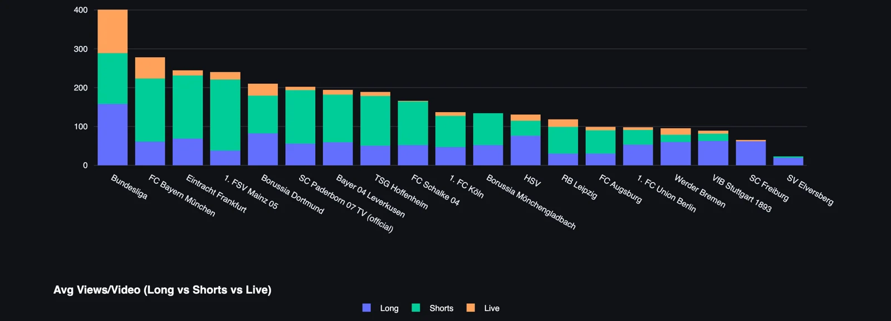
The league channel leads on volume with 401 videos, 158 of them long-form and 112 live, ahead of Bayern at 278, Frankfurt at 245, Mainz at 240 and Dortmund at 210, and below the top two the link between how much a club publishes and how much it gets watched is weak. Frankfurt has published 245 videos for 7.8 million views and Werder Bremen 95 for 4.3 million, so Bremen gets 45.2 thousand per upload against 31.7 thousand for Frankfurt, and Paderborn has published 202 videos, more than Dortmund, for 879.9 thousand views.
Elversberg, at 23 videos, and Freiburg, at 64, are the least active channels, which means roughly one video every four and a half days for Elversberg and one every day and a half for Freiburg, and Freiburg has done it with 62 long-form videos and no Shorts at all. You cannot build an audience on YouTube at the Elversberg rhythm, and Freiburg has chosen to sit out the format that carries 63% of the league's views.
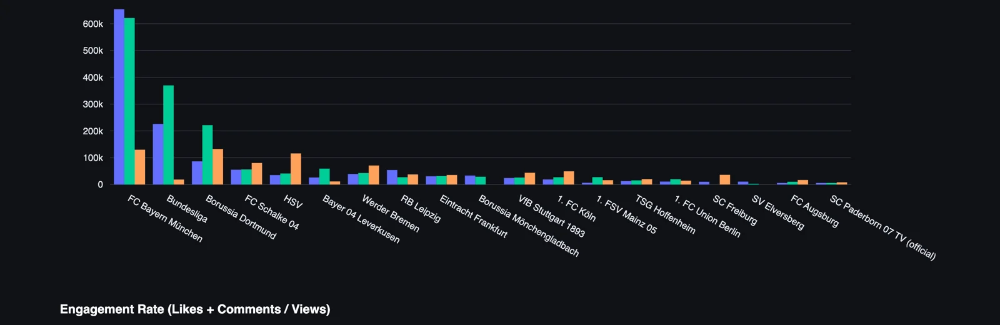
Views per video puts the volume race in context. Bayern averages 531.2 thousand views per video and the league channel 214.9 thousand, so the league publishes 44% more and gets well under half the views per upload, and Dortmund in third averages 155.6 thousand, which means a Bayern video is worth three and a half Dortmund videos.
The split by format tells each club where its audience is. HSV's live streams average 116 thousand views, more than three times its long-form at 35.1 thousand, from 16 streams, so HSV has a live audience and feeds it less than one stream a week. Werder Bremen has a smaller version of the same story, 16 streams at 70.9 thousand against 39.1 thousand for long-form, and Köln's 10 streams at 49.4 thousand beat both its other formats. Schalke is the odd one, with long-form, Shorts and live all between 55 and 81 thousand, so whatever Schalke publishes, the same fans turn up. In the HSV and Bremen cases the club has found the format that works and makes very little of it, which is the cheapest growth available anywhere in this dashboard.
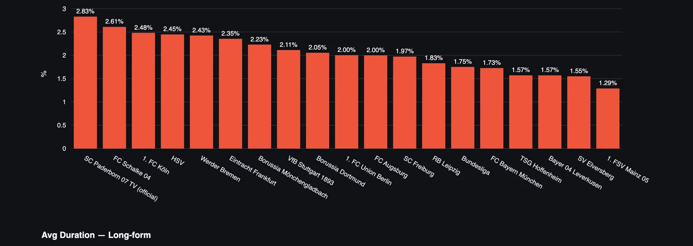
The ranking turns over completely. Paderborn leads at 2.83%, then Schalke at 2.61%, Köln at 2.48%, HSV at 2.45% and Bremen at 2.43%, and the three channels at the top of the views table are in the bottom half here, Dortmund at 2.05%, the league channel at 1.75% and Bayern at 1.73%. Paderborn has 879.9 thousand views, the second-smallest audience in the table, and the highest share of viewers who react, and Bayern has 147.7 million views and sits fifteenth of nineteen. My reading is that a global audience watches as neutrals and reacts like neutrals, and the committed supporter base of a smaller club behaves the other way round. Mainz is last at 1.29% with 89% of its views from Shorts, and Leverkusen and Hoffenheim sit next to it at 1.57%, so the three most Shorts-dependent club channels in the league are also three of the four least engaged.
Reach and engagement point in different directions in the Bundesliga, and the gap is wider than in Serie A, where the leader was at 3.13% and the views leader at 2.04%. Schalke at 2.61% from 9.3 million views is the one channel that scores on both, a big audience that still behaves like a fan base, which is probably what 29-minute long-form videos do for you.
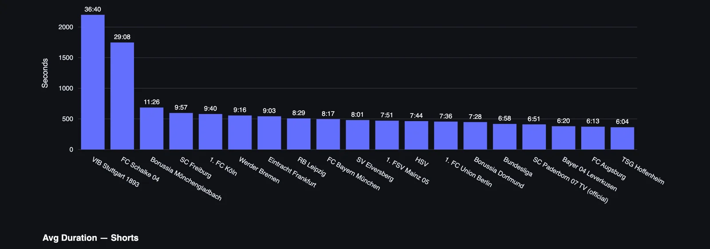
Stuttgart makes the longest long-form videos in the league, at 36:40 on average, followed by Schalke at 29:08, and then there is a cliff down to Mönchengladbach at 11:26, Freiburg at 9:57, Köln at 9:40 and Bremen at 9:16. Bayern is in the middle at 8:17, the league channel at 6:58 and at the bottom Hoffenheim averages 6:04, Augsburg 6:13 and Leverkusen 6:20.
Stuttgart and Schalke are publishing full press conferences and shows in the long-form slot, and the two produce opposite results, because Schalke's long-form averages 55.3 thousand views and Stuttgart's 24.1 thousand from 63 videos. The length is the same choice, and the audience is what decides whether it works.
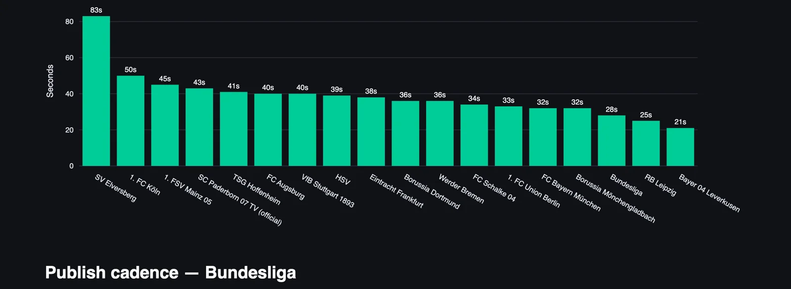
Elversberg's three Shorts average 83 seconds, Köln's 50 and Mainz's 45, and then most of the league sits between 32 and 43 seconds. Leverkusen is at the bottom with 21 seconds, Leipzig at 25 and the league channel at 28, and Bayern at 32 seconds sits right in the pack.
The Bundesliga's biggest channel does not run the Serie A barbell. Bayern's long-form is a mid-table 8:17 and its Shorts a mid-table 32 seconds, and it wins on both anyway, which says the audience matters more than the format settings. Leverkusen is the closest thing to a Juventus here, 21-second Shorts and 6:20 long-form, with 81% of its views from the feed and an engagement rate of 1.57%, and that is the same pairing Juventus showed in Italy, short clips, big reach and an audience that rarely reacts.
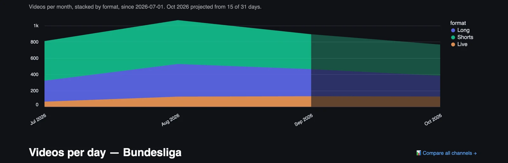
Output grew from roughly 800 videos in July to about 1,050 in August, and then fell back to around 950 in September, with Shorts and long-form both rising into August and settling after it, and live sitting at a steady 100 to 130 streams a month once the season started. October is projected at about 770, lower than any full month so far, and the projection is built on 15 of 31 days with an international break inside them, so treat it as an early read.
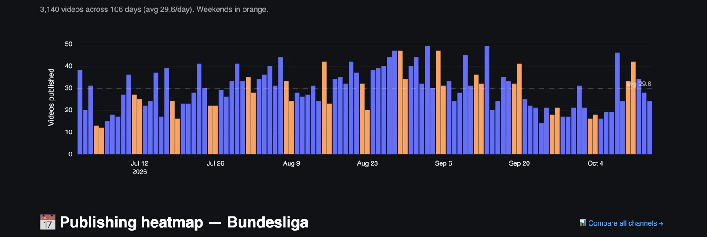
Early July runs at 12 to 20 videos a day, which is pre-season, and the daily count climbs through late July and August to the busiest stretch at the end of August and the first fortnight of September, with several days at 45 to 49. The second half of September and early October fall away to 15 to 25 a day, which is the international break showing up in the chart.
Weekends matter more here than in Serie A, and the Saturday and Sunday bars sit above the weekdays around them for most of the season, which is match content and live streams going out on the day. For a club the useful number is the average, 29.6 Bundesliga videos a day, which is how much other Bundesliga content every upload competes with for the attention of the same fans, and it is a quarter less than the 40.9 a day in Serie A, so the German feed is a less crowded place to publish.
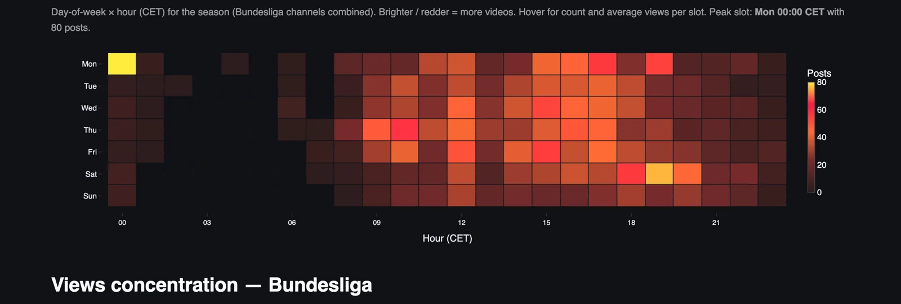
The peak slot is Monday at 00:00 CET, with 80 posts, which is the hour after the Sunday evening match and the clearest sign on this page that clubs here publish on the night. The rest of the week runs from 09:00 to 21:00, with Thursday mid-morning and Saturday evening between 18:00 and 20:00 as the other busy windows, and the Saturday evening block is the post-match slot for the 15:30 and 18:30 kick-offs.
Publishing at midnight on Monday says a lot about how Bundesliga clubs see YouTube, as the place where the match lands while it is still the conversation, which is the opposite of the Monday lunchtime recap habit in Italy. The Sunday row is almost empty all day until the whistle, so a club with a smaller audience has a near-empty Sunday morning feed to try.
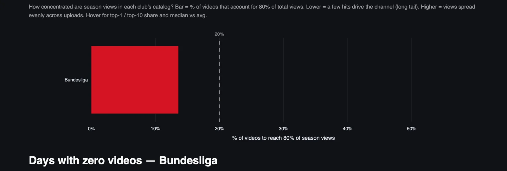
About 13% of the videos produce 80% of the views across the Bundesliga this season, a sharper split than the 20% in Serie A, and the reason is on the first chart, because when one channel has 45% of the views, its hits are the league's hits. A minority of videos carries the season, and the other 87% of the catalogue is there to keep the channels alive and the algorithm fed.
In the tracker the same chart works per club, so a club can see whether it lives on a handful of viral videos or spreads its views evenly, and those are two very different editorial problems.
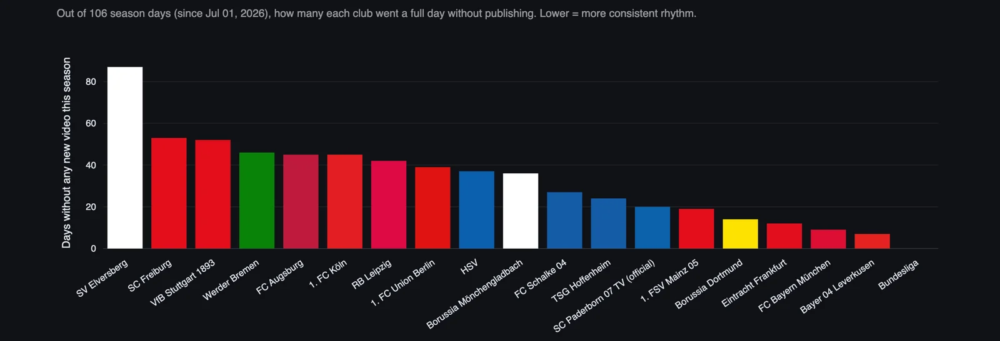
The league channel has not missed a day, Leverkusen has missed about seven, Bayern about nine and Frankfurt about twelve, with Dortmund and Mainz between 14 and 19. At the other end Elversberg has gone about 87 days of the 106 without publishing, and Freiburg and Stuttgart each went more than 50 days silent, with Bremen, Augsburg and Köln in the mid-40s, so a third of the league is silent on four days in ten.
Stuttgart in that group is the surprise, a big club sitting next to the two smallest channels in the league for consistency, and Freiburg has built a channel that skips Shorts and skips half the days. Consistency is the cheapest thing on this page to fix, and the four channels with the fewest missed days are four of the top six on the views chart.
Part two
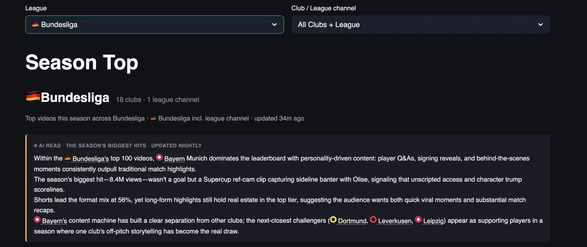
Part one looked at channels, and part two looks at videos, the 100 most-watched Bundesliga uploads since 1 July, which add up to 191.6 million views, 1.9 million per video on average, at an average age of 44 days. That is twice the top-100 total of Serie A, and the list is dominated by Bayern and by one player, because the most-watched video of the season is a league channel Short of the Supercup referee camera catching a conversation with Michael Olise, 13.0 million views, and Olise is in four of the top eleven.
Match highlights barely feature. The top eleven has one match video, Bayern's uncut nine minutes of Lewandowski's five goals, which is an archive piece, and the rest is a bite of a trophy, Oktoberfest, Harry Kane everywhere, a paid promotion about the Allianz Arena, and Olise again and again. Shorts take 65% of the top 100 and long-form 33%, and the most-watched video holds 6.8% of the top-100 views, twice the share of the Serie A leader, so this season has a viral monster at the top and a long Bayern tail behind it.
For a club social team this is the list to learn from, and for a journalist it is the closest thing to a record of what Bundesliga fans chose to watch, like and argue about this autumn.
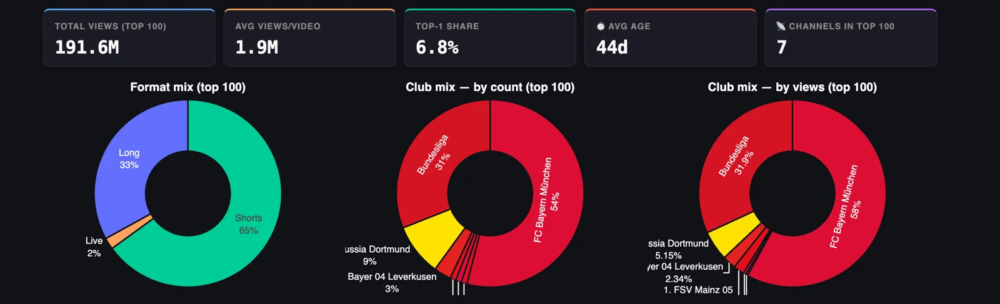
Only seven channels place a video in the top 100, and two of them take nine tenths of it. Bayern has 54% of the videos and 58% of the views, the league channel has 31% of the videos and 31.9% of the views, and Dortmund, Leverkusen, Mainz and two other clubs share the rest, with Dortmund taking 5.15% of the views from nine entries and Leverkusen 2.34% from three.
Twelve clubs have no video in the top 100, and Dortmund, third in the league on season views with 32.7 million, has less than a tenth of Bayern's share of the views here, because the Dortmund audience is spread across 210 videos and the Bayern audience piles onto a few. The Jobe Bellingham video that would be Dortmund's biggest hit of the season sits on the league channel, which is the same lesson Napoli learned in Serie A, the club is the content and somebody else owns the upload.
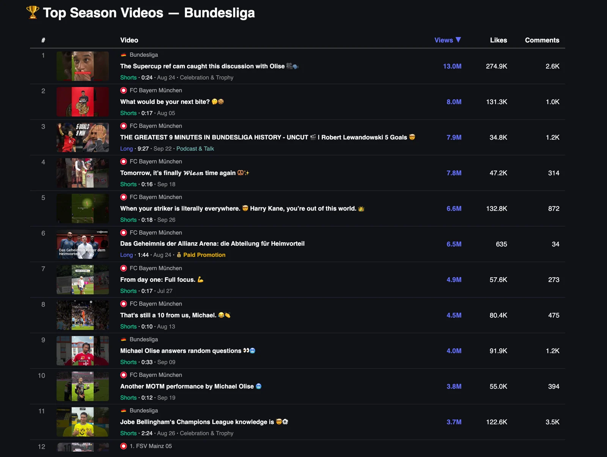
Nine of the top eleven are Shorts between 10 and 33 seconds, and the two long-form entries are Bayern's, the Lewandowski five-goal piece at 9:27 with 7.9 million views and a 1:44 paid promotion about the Allianz Arena at 6.5 million, which has 635 likes and 34 comments, so the views are bought and the audience knows it. The league channel's Supercup referee camera clip with Olise leads with 13.0 million, and the second Bayern entry, a seventeen-second Short from 5 August asking what would be your next bite, has 8.0 million, which I read as a new signing biting the Supercup trophy, and that is one for Carlo to check.
Olise is the story of the list. The referee camera clip, the ten-second that's still a 10 from us Michael at 4.5 million, the league's random questions interview at 4.0 million and a man-of-the-match Short at 3.8 million add up to 25.3 million views from one player across two channels in two months, and none of the four needs match footage beyond a single moment. Harry Kane's you're out of this world Short at 6.6 million and the Oktoberfest teaser at 7.8 million round out a Bayern top ten built on faces and the city, and the Oktoberfest clip, sixteen seconds, is the kind of thing a club can shoot in an afternoon.
Jobe Bellingham's Champions League knowledge, a 2:24 Short from the league channel at 3.7 million, closes the top eleven and is the only Dortmund player in it, with the best like rate of the eleven at 3.3%. Mainz is twelfth, the first club channel other than Bayern to appear, and the first sign of the rest of the league.
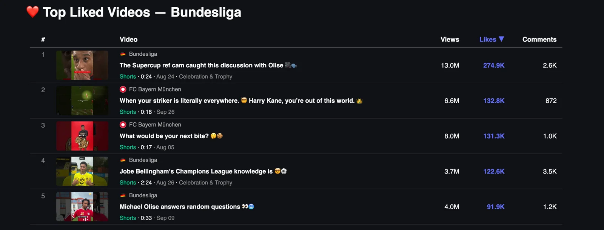
The most-liked video of the season is the Supercup referee camera clip with Olise, 274.9 thousand likes from 13.0 million views, a like rate of 2.1%, and it is followed by Harry Kane at 132.8 thousand from 6.6 million, 2.0%, and the bite Short at 131.3 thousand from 8.0 million, 1.6%. The two league channel entries below them have the better rates, Jobe Bellingham at 3.3% and the Olise random questions interview at 2.3%, and the Lewandowski long-form, with more views than three of these five, has 34.8 thousand likes, a rate of 0.44%, which is why it is not on this list.
Likes go to a player being himself for a camera, a trophy bite, a quiz, an interview, a sideline argument, and all five of these are Shorts that could have been shot on a phone by the person standing next to the player. The archive highlights get watched, the personality clips get liked, and a club that wants likes has the cheaper job.
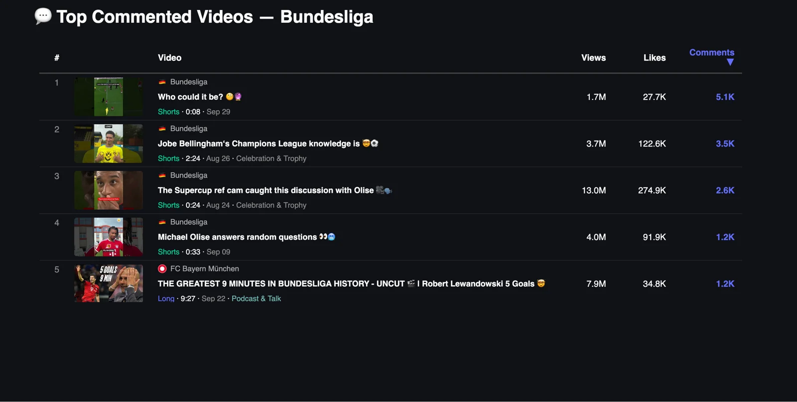
The most-commented video of the season is an eight-second league channel Short from 29 September titled who could it be, 5.1 thousand comments from 1.7 million views, one for every 333 views, which is fifteen times the rate of the Supercup clip at one for every 5,000, and the title is a guessing game, so the comments are the video. Jobe Bellingham is second with 3.5 thousand comments from 3.7 million views, one for every 1,057, the Supercup clip third at 2.6 thousand, and the Olise interview and the Lewandowski nine minutes share the last two places at 1.2 thousand each.
Four of the five are league channel Shorts, and Bayern, with 54 videos in the top 100, has one entry here, which says the Bayern audience watches and likes and does not stay to argue. A quiz, a guessing game and a trophy argument produce more conversation per view than any highlight on this list, and for a journalist this is the most useful list in the tracker, because it points straight at the stories fans want to talk about.
The Bundesliga on YouTube is one club, one league channel and seventeen clubs sharing a sixth of the views, and the thing under all of it is audience, because Bayern publishes fewer videos than the league, has a mid-table long-form length and mid-table Shorts, and still earns 600 thousand views for a clip of a player at Oktoberfest. I worked the first Champions League seasons at the Olympiastadion with Bayern in the 1990s, when the club's reach stopped at the stadium gates and a German TV signal, and the channel in this dashboard is what that club looks like with the gates removed.
Engagement is the one place where the smaller clubs win, with Paderborn, Schalke, Köln and HSV all above 2.4%, and that is the asset I would build on if I ran one of them, with a daily rhythm first, because a third of the league is silent on four days in ten, a decision about live second, because HSV and Bremen have found a format that earns three times their long-form and feed it once a week, and the Sunday morning feed third, because nobody is in it. Nobody at the bottom of the zero-days chart needs a bigger budget to fix the first of those.
The hit list in part two says what that daily rhythm should carry, with the league owning the trophy moments and the guessing games, and the clubs winning with players being themselves, a bite, a quiz, a sideline argument, a trip to the beer tent, and none of those formats needs match footage or a rights window.
YouTube Football Tracker
Clubs and leagues can use it to benchmark their channel against every rival and borrow what is working elsewhere, across all five big leagues. Journalists can use it to find what is breaking out on football YouTube, which club is suddenly growing and which format is taking over, with the numbers to back the story. Everything in this piece is live at ytft.aguywithascarf.com, and if you want a custom view for the clubs or leagues you follow, message me on LinkedIn.
Explore the YouTube Football TrackerYou can find me on LinkedIn, read my LinkedIn newsletter or find me on Substack.